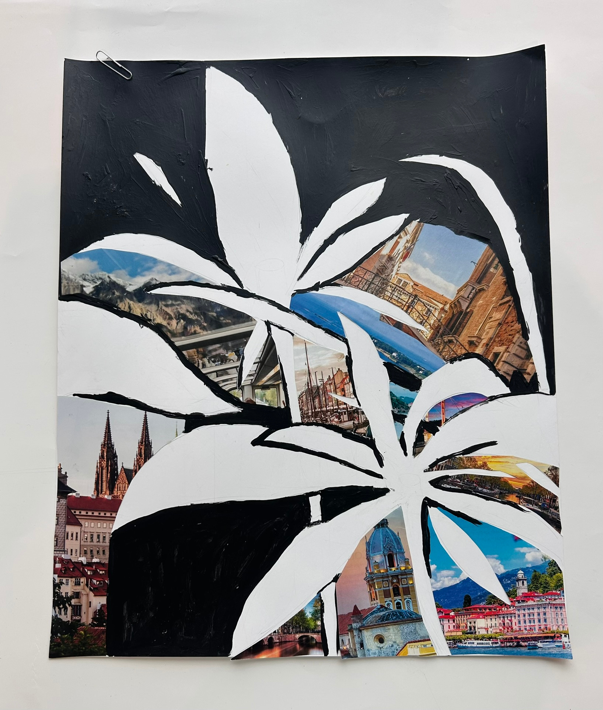

table of contents
#1 Map Project
#2 Concert Poster
#3 Negative and Positive Space
#4 Human Trait project
#5 Logo Design
#1 Map Project

This mapping project is about the geography of japan.
#2 Concert Poster

This imaginary concert poster project is about a fake piano concert by Fujii Kaze
#3 Negative and Positive Space Project
This negative and positive space project is about silhouette of a flower.
#4 Human Trait project

This human trait project is about the word "curiosity" and based on Sherlock Holmes, the famous fictional character.
#5 Logo Design
The logo project has about taking a the meaning of my name, and turned it to the jasmine flower.
Why is it Important?
I care about my designs because I took time and effort on them. I was mostly interested in making a design that is cartoony and fun. My motivations to these designs are thinking about fun designs to draw and work on.